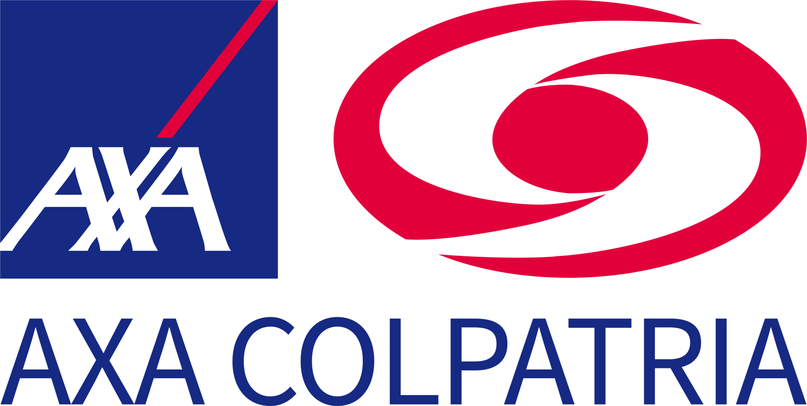

Checkmarx & SonarQube Implementation
Azure DevOps
Checkmarx
SonarQube
2025
AXA Colpatria — Active Project
Implementation of security and code quality gates integrated directly into the company's Azure DevOps pipelines. Checkmarx performs static application security testing (SAST) on the source code at every build; SonarQube evaluates quality, coverage and technical debt. No application reaches production without passing the defined thresholds, ensuring a uniform standard across the entire organization.
